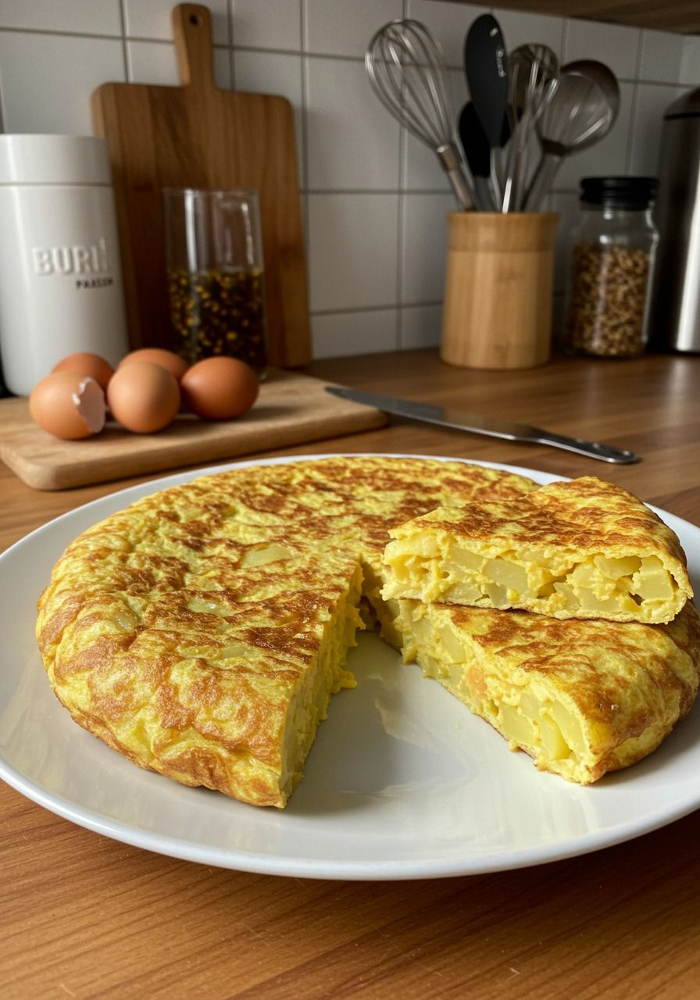

Spanish Tortilla

Something about the Spanish Tortilla
The Spanish tortilla (omelette) was invented in Villanueva de la Serena, Extremadura, at the end of the 18th century. Although there are legends that place its origin in Navarre during the First Carlist War, the strongest historical evidence points to its Extremaduran roots. There are two types of people: “concebollistas” and “sincebollistas.”
On one hand, some people say that Spanish tortilla shouldn't have onion (“sincebollistas”), but on the other hand, others love adding onion to this dish (“concebollistas”).
To find out which team you're on, try both!. We're adding onion in this recipe — but feel free to skip it if you prefer!.
Ingredients (4 people):
- 700gr Of potatoes for frying
- 1 Large onion (optional)
- 500ml Of mild olive oil for frying
- 6 Large eggs (8 if medium)
- 1 Teaspoon of salt
Let's get started
- We'll start with the potatoes. It's best to use a variety that's suitable for frying. We'll need around 700 g, which will be about 600 g once peeled, depending on how skilled you are with the peeler. After peeling, rinse them and start cutting. We recommend slicing them thinly, about 3 mm thick. You can do this with a knife or much faster with a mandoline. Some people prefer to cut them into irregular pieces or small cubes, but those shapes take longer to cook.
- Next comes the onion — one of the most debated ingredients. This part is simple: if you like it, add it; if not, leave it out. For these quantities, we'll use one large onion, which we'll peel and finely slice into thin strips (julienne). It's better to cut it this way rather than into small cubes, as smaller pieces may burn before the potatoes are fully cooked.
- Once we've cut the potatoes and onion, we heat the oil over high heat. You'll need enough oil to just cover the potatoes — with these quantities, that's about 500 ml. When the oil is hot but not smoking, start adding the potatoes gradually, and finally, the onion.
- Once all the potatoes and onion are in, keep cooking over high heat, stirring often so they don't burn. When the oil starts bubbling again, lower to medium-low heat — we're not deep-frying, but gently confiting the potatoes. Cook for about 20/30 minutes, stirring occasionally to prevent sticking. It's normal for the potatoes to break apart as they soften.
- Once the potatoes are cooked, take a large colander, preferably stainless steel, and place it over a bowl. Remove the potatoes from the oil and transfer them into the colander to drain the excess oil.
- While the potatoes drain, we prepare the eggs. The quality of the eggs is crucial — ideally, use free-range eggs for the best flavor. The ideal ratio is 1 large egg per 100 g of peeled potatoes, so we need 6 eggs (or up to 8 if using medium). Crack the eggs into a bowl and beat them gently, avoiding too much air.
- Once the eggs are beaten, season them with about one teaspoon of salt and gradually add the drained potatoes. Gently stir again to combine. Some people mash the potatoes with the eggs, especially if the potatoes were cut into small cubes. Let the mixture rest for about 10 minutes to allow the flavors to meld and for it to thicken slightly.
- Take a medium pan — about 24cm for a thicker tortilla or 26cm for a thinner one. Grease the pan with a little oil, you can reuse the oil from frying the potatoes. Place it over medium heat, and when it's hot but not smoking, add the potato and egg mixture. Cook over medium heat for a golden tortilla, or medium-low for a lighter color.
- When it's ready, flip the tortilla using a plate. Cooking times vary: 1 minute for very runny, 2 minutes for juicy, 3 minutes for medium, and 4/5 minutes for a firm tortilla (lower the heat to prevent burning). Grease the pan again, slide the tortilla in, and cook the other side slightly less than the first.
- Once the Spanish tortilla is ready, serve it on a plate and let it rest for a few minutes. It's best enjoyed when it has cooled slightly or is just warm.
And that's how you can enjoy a truly typical Spanish dish. Don't be afraid to flip the tortilla — it's fun, I promise!
Go back to the home page to learn something new to cook!